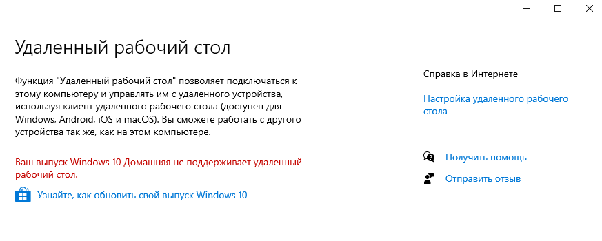
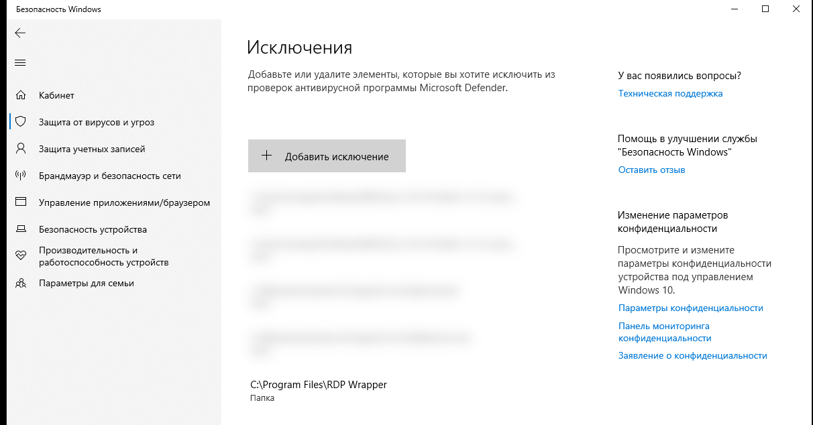

Пробросить VPN+RDP подключение на домашний компьютер: пособие для маленьких и тупых


Так уж вышло, что бывает нужно с работы/поездки/откуда-то_ещё подключаться к домашнему компьютеру. Например, чтобы показать свой проект на презентации. Или подключиться к локальному сервису, развернутому на машине.
Но что, если ситуация усложняется тем, что ты дурак и купил хромбук вместо нормального устройства?
Выход через оконный проём всегда имеется. И даже есть простой и понятный путь решения задачи: развернуть l2tp/ipsec VPN-сервер (например, великолепный SoftEtherVPN) и подключить к нему все необходимые устройства.
Более того, именно такая схема у меня и была раньше. (Пока я не забывал платить за VDS)
Ковальски, варианты!
Есть максимально тупой и небезопасный путь: вытащить из-за NAT/фаерволов "наружу" домашний компьютер и подключать напрямую. Но если комплюхтер на шиндоусе, все мы с вами знаем, с какой скоростью к нему получит доступ кто-нибудь ещё...
Какой-нибудь абстрактный лейтенант КейДжиБи спустя несколько секунд сделает из домашнего компьютера хранилище центральных процессоров. И меня же за это набутылит.
А есть какой-то VPN для бедных?
Мне вспомнился легендарный сервис, который знал каждый школьник моего детства. Именно через него играли во всякие доты, контерстрайки, и убойные дела — Hamachi.
С тех пор, как я им в последний раз пользовался, он сильно коммерциализировался и стал ограничивать сети лишь 5-ю устройствами, а за увеличение лимита вымогать деньги. Довольно мерзко, но для личного использования должно хватить.
Суть этой софтины в том, что она не предоставляет VPN-сервер в классическом понимании (не пропускает весь шифрованный трафик через себя). А лишь "знакомит" устройства сети друг с другом, и помогает им поднять P2P подключение. Т.е. пинг и скорость подключения будут ровно такими же, как если бы устройства подключались напрямую без дополнительного софта. Но при этом устройства будут продолжать быть глубоко за NAT и быть недоступны для внешних глаз.
А дальше что?
Создать аккаунт и свою приватную сеть на официальном сайте элементарно. Но для меня оставалось загадкой: смогу ли я подключиться к этой сети со своего экзотического хромбука?
Найти клиент под windows не составляет труда. А вот страница скачивания ARM-linux-клиента меня встретила вот таким выбором:

Во-первых, вы узнаём, что билд под ARM до сих пор остаётся в beta. Но мы не будем использовать его в production, так ведь? :)
Во-вторых, мне предлагают выбрать между ARMEL и ARMHF версиями. И тут я впервые столкнулся с этими аббревиатурами.
Быстрым гуглением выяснилось, что ARMHF — это процессоры с хардварным обработчиком операций над floating-point-числами, а ARMEL, соответственно, софтверным.
Поскольку я живу в 2021 году, то выбрал deb-пакет с ARMHF. Но при установке меня ждало следующее испытание: установщик сваливался с ошибкой, где ругался на то, что архитектура ARM64 != ARMHF.
Що робити? Гуглити!
Вот тут нашел возможное решение. Там юзверь смог установить и запустить ARMHF-версию после того, как добавил эту архитектуру в dpkg и установил для неё libc6 и libstdc.
sudo dpkg —add-architecture armhf
sudo apt-get update
sudo apt-get install libc6:armhf
sudo ln -s /lib/ld-linux-armhf.so.3 /lib/ld-linux.so.3
sudo apt-get install libstdc++6:armhf
После таких танцев с бубном deb-пакет с hamachi успешно устанавливается. Осталось подключиться к созданной ранее сети:
sudo /etc/init.d/logmein-hamachi start
sudo hamachi set-nick chromebook
# sudo hamachi join %network id% %network password% у меня (как и у того пользователя) не завелось
# возвращая безымянную ошибку #167
# но можно привязать свой аккаунт logmein к этому клиенту. И подключиться к сети через веб-интерфейс
sudo hamachi attach %почта, используемая при регистрации%
После этого в личном кабинете появится запрос на подключение клиента. Нужно его подтвердить и привязать к сети. На этом любопытная часть закончилась. VPN на хромбуке поднят. Если всё пошло, как и ожидалось — в терминале мы должны видеть примерно следующее:
sudo hamachi
# version : 2.1.0.203
# pid : 1150
# status : logged in
# client id : XXX-XXX-XXX
# address : XXX.XXX.XXX.XXX %ipv6addr%
# nickname : chromebook
# lmi account: %your email%
sudo hamachi list
# * [XXX-XXX-XXX]%network name% capacity: 1/5, subscription type: Free, owner: %your email%
ip addr show
# >> Появился интерфейс
#3: ham0: <BROADCAST,MULTICAST,UP,LOWER_UP> mtu 1404 qdisc pfifo_fast state UNKNOWN group default qlen 1000
На стороне домашнего компьютера
Подключение к Hamachi из-под windows-x64 происходит без каких-либо дополнительных сложностей: просто скачиваем клиент, запускаем, логинимся, радуемся поднятым VPN.
Поднимаем RDP сервер
А нахрена?
Конечно, для простого удалённого управления можно воспользоваться Chrome Remote Desktop. Но в нём очень куцая функциональность. Например, он не может шарить буфер обмена, файлы и подключенные по USB устройства между компьютерами. А классический RDP делает это элементарно из коробки.
Что ж. Чтобы включить RDP сервер на PRO* версиях windows, нужно лишь нажать на переключатель в настройках. Но если вы жадный русский бедный житель страны третьего мира, то внезапно можете обнаружить вот такую заглушку:

По умолчанию в "домашние" сборки Windows не входит RDP сервер. Но есть замечательный проект на гитхабе, который поможет решить проблему: RDPWrap. Сия шайтан-софтина не очень friendly в установке и у меня завелась только после такого алгоритма действий (который я подсмотрел здесь):
- Скачал релиз в zip (а не инсталлятор)
- Добавил папку с распакованными файлами в исключения защитника шиндовс

- Запустил install-скрипт
- Погасил сервис
- Заменил ini-файл на тот, что здесь.
- Запустил сервис
install.bat
net stop termservice
# Подменил ini-файл в директории C:\Program Files\RDP Wrapper\rdpwrap.ini
net start termservice
- ...
- PROFIT!

Всо
На этом этапе должно уже всё заработать. Из-под хромбука по RDP можно подключаться через FreeRDP клиент, который есть в apt и уже был описан вот здесь.
К остальным поднятым сервисам можно будет "достучаться" так же, как если бы компьютеры были в локальной сети. ¯\(ツ)/¯